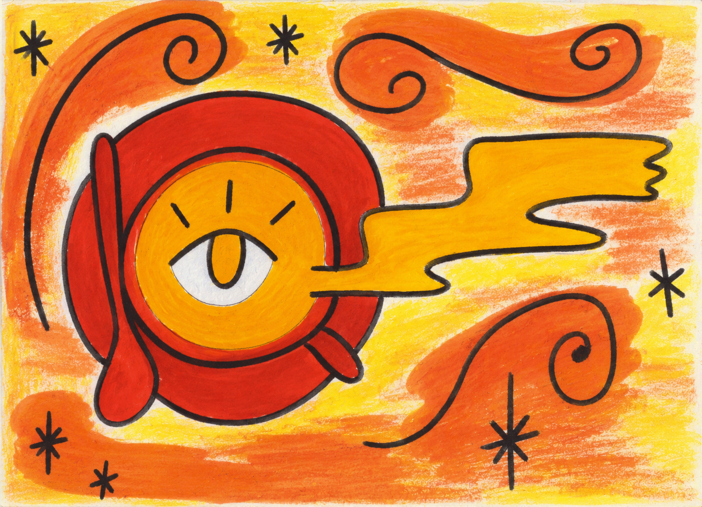
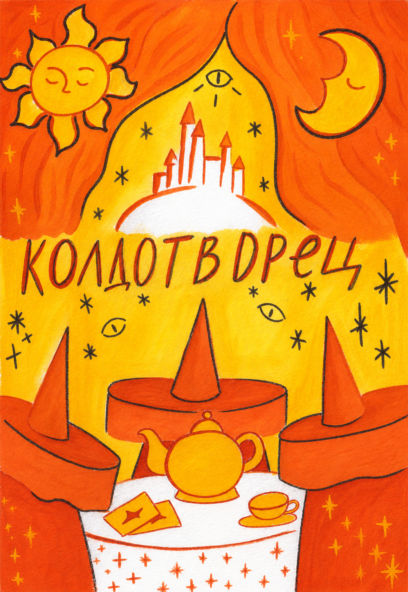
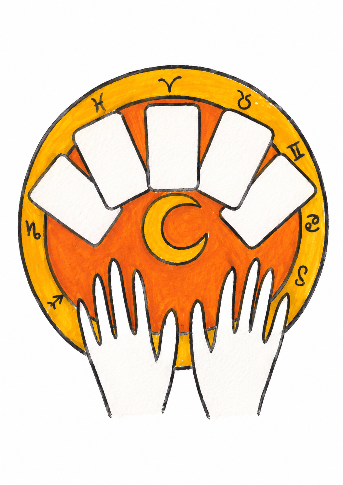
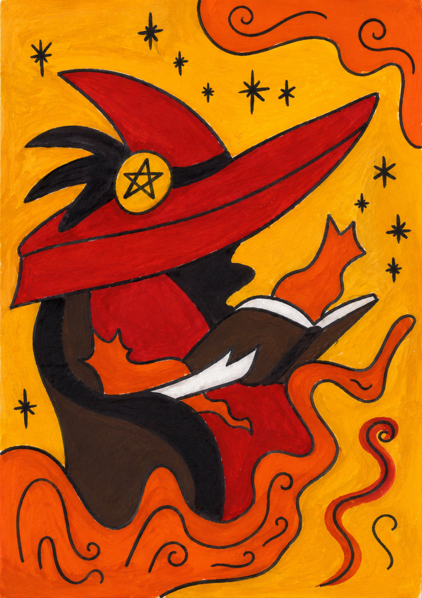
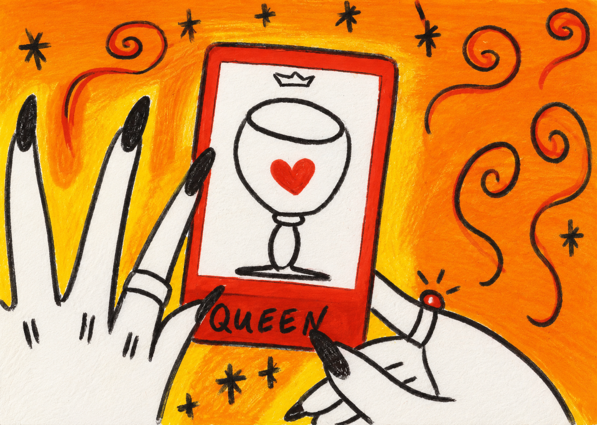
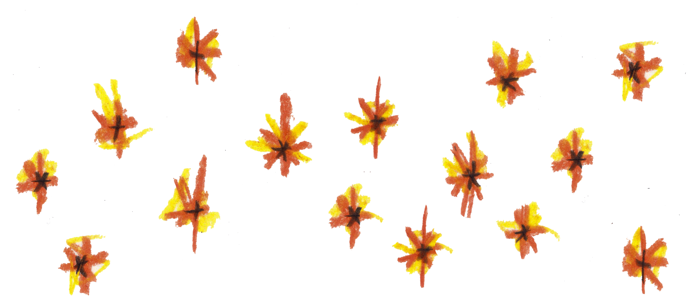

01
Играй в своём ритме
Один вечер или целая серия странствий — история ждёт, когда у тебя найдётся время.
Соло настольная ролевая игра
«Колдотворец» — уютное путешествие в мир знаков, чудес и решений. Открой книгу, достань карандаш — и отправляйся в историю, которую поведёшь сам.
Покупка — в сообщениях сообщества автора

Всё, что нужно — под рукой
Соло НРИ — это игра без ведущего и без необходимости собирать компанию. Ты создаёшь героя, задаёшь вопросы миру и находишь ответы, из которых рождается твоя собственная сказка.
Подойдёт и тем, кто давно любит настольные ролевые игры, и тем, кто только хочет попробовать этот способ рассказывать истории.
Что ждёт внутри
Игра ведётся с помощью карт Таро — а всё вокруг нарисовано вручную, с заботой о каждом читателе.

Один вечер или целая серия странствий — история ждёт, когда у тебя найдётся время.

Выбирай, тяни карту Таро, записывай находки. Не нужно искать «правильный» путь.

Магия здесь живёт в деталях: в знаках, случайностях и внимании к твоему герою.

Каждая партия становится личной тетрадью приключений, к которой хочется вернуться.

«Не жди приглашения
в волшебную страну.
Создайте её сами!»
Колдотворец — для тихих вечеров, любопытных сердец
и тех, кому близки истории с послевкусием чуда.
Первые впечатления
Здесь появится отзыв игрока — тёплая история о первом путешествии в мире «Колдотворца».
Добавьте настоящий отзыв из сообщений сообщества, чтобы читатель почувствовал игру ещё до первой страницы.
Ваше впечатление тоже может однажды оказаться здесь — вместе с историей вашего колдотворца.
Твоя очередь
PDF-версия игры уже ждёт тебя. Напиши сообществу — и начинай своё первое колдовство.
Написать и купить ↗